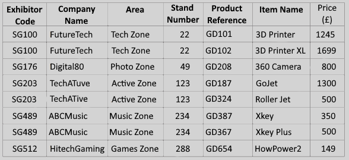
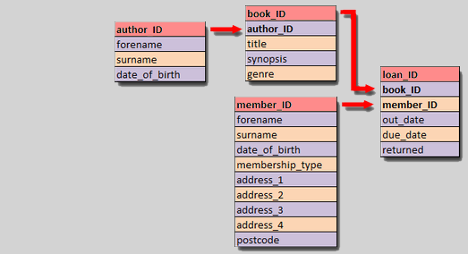

Introductie
Een database is een online archief. Je moet databases zien als
tabellen. De tabelkop geeft aan wat voor soort informatie en data
opgeslagen is.
Een database wordt door de gebruiker aangestuurd met een querytaal.
Deze taal vertelt de database wat er moet gebeuren.
Soorten databases
Er zijn twee soorten databases: flat file databases en relationele
databases.
Flat file databases:
Flat file databases bestaan
uit één tabel waar alle informatie in is opgeslagen. Deze database is
dus erg groot en ingewikkeld, het is dus erg lastig om met grote
hoeveelheden data te werken.

Relationele databases:
Relationele databases zijn
opgebouwt uit meerdere tabellen. Al deze tabellen bewaren specifieke
informatie die alleen bij die tabel hoort.
Als je uit twee of meer tabellen informatie nodig hebt, wordt er een
nieuwe tabel aangemaakt. Deze tabel bevat dan bepaalde stukken
informatie uit alle tabellen.
Relationele databases zijn dus erg geordend en goed te gebruiken om
grote hoeveelheden data te verwerken.
